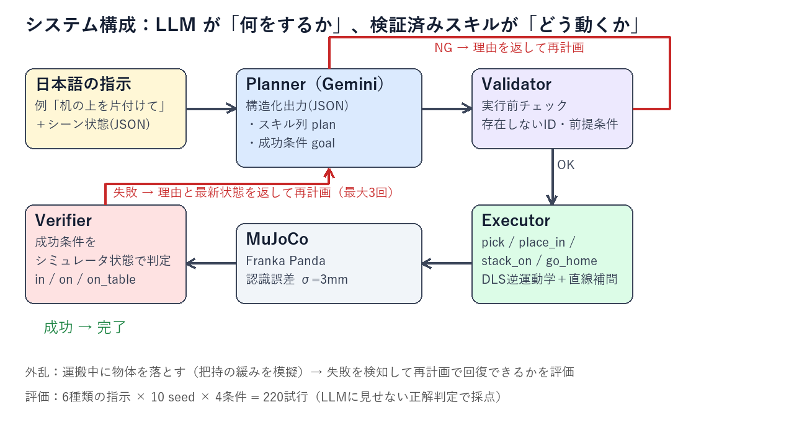
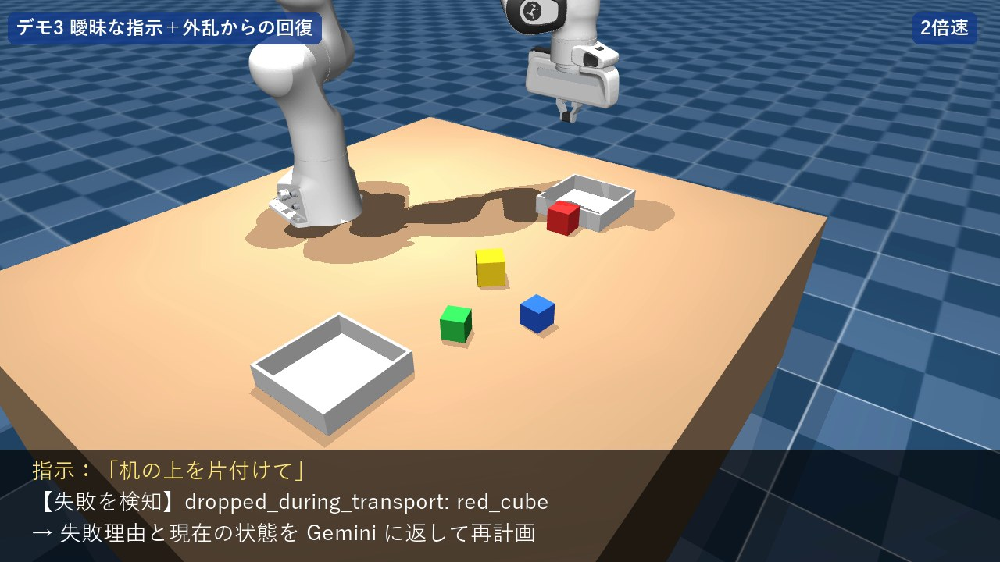
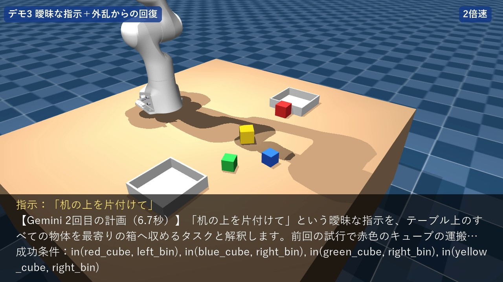
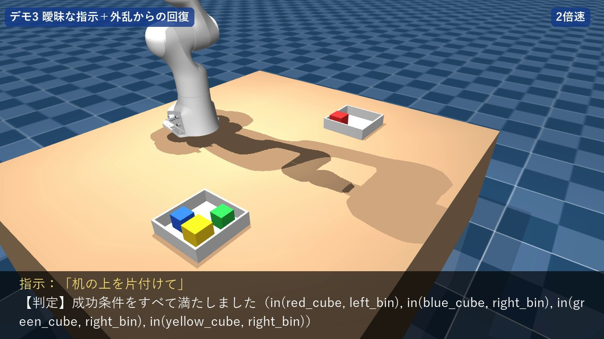
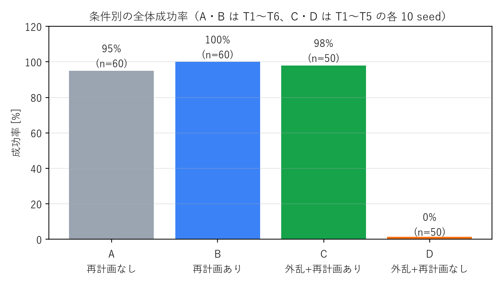
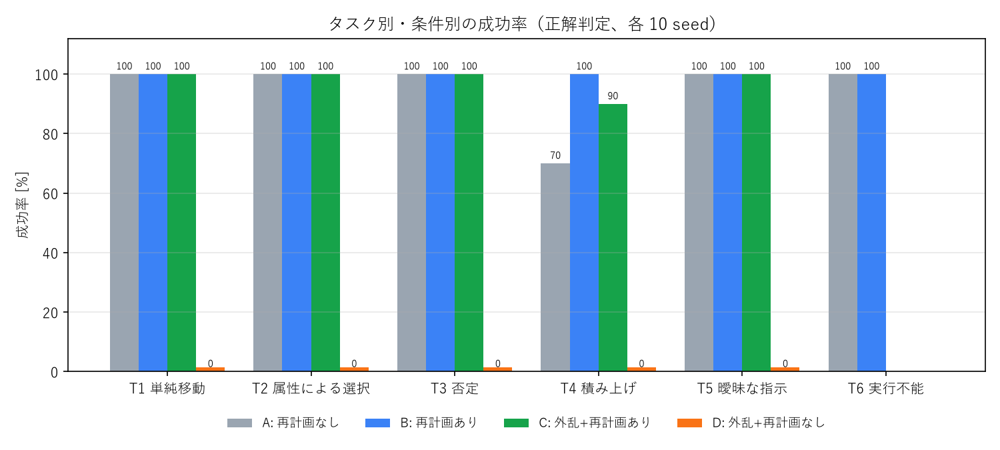

言語指示で片付けるロボットアーム
Gemini（LLM）× MuJoCo Franka Panda — 計画・検証・再計画の閉ループによるタスク実行
Physical AI 応用編1 最終課題 ／ Martingale ／ コード：GitHub リポジトリ（提出フォームに記載）／ 動画：YouTube（同）
概要：日本語の指示（「机の上を片付けて」など）から、LLM が実行するスキル列と成功条件を生成し、
シミュレータ上のロボットアームが検証済みのスキルで実行する。LLM の出力は実行前（Validator）と実行後（Verifier）で検証し、
失敗したら理由を LLM に返して再計画する。運搬中に物体を落とす外乱を入れた評価で、
再計画なしでは 0% だった成功率が、再計画ありでは 98%（50 試行）になった。
1. 課題の目的
- 人間の曖昧な言葉を、検証できるロボット動作に変換する仕組みを作る（家庭の片付け・物流の仕分けを想定）
- LLM の出力を鵜呑みにせず、失敗に自分で気づいて立て直す（閉ループ）ことを示す
- 講義で学んだ再現可能な評価（seed 固定・条件比較・層別の失敗分析）を自分の手で実践する
2. ベースラインとの違い（工夫の出発点）
課題 PDF の最終課題サンプル「ChatGPT API による自然言語ロボット操作」「Gemini Robotics-ER を試す」を出発点とした。
サンプルは「言語 → ロボットへの命令」の一方向の変換が中心である。本課題では次の 4 点を加えて発展させた。
| 観点 | サンプル（ベースライン） | 本課題 |
|---|
| LLM の出力 | 命令（コマンド） | スキル列 ＋ 成功条件（述語）を JSON スキーマで強制 |
| 出力の検証 | なし／目視 | 実行前 Validator ＋ 実行後 Verifier ＋ LLM に見せない正解判定 |
| 失敗への対応 | なし | 失敗理由と最新状態を返して再計画（最大 3 回）、外乱からの回復を評価 |
| 評価 | デモ | 6 種類の指示 × 10 seed × 4 条件 = 220 試行の定量評価 |
3. システム構成

図1 システム構成。LLM は「何をするか」、検証済みスキルが「どう動くか」を担う。赤線は再計画のループ。
| 要素 | 内容 |
|---|
| シミュレータ | MuJoCo 3.17。Franka Emika Panda（mujoco_menagerie）に、テーブル・ブロック 4 個（色 4 種 × 大小）・箱 2 個を MjSpec で追加。
ブロックの初期配置は seed から生成。物体位置には σ=3mm の認識誤差を加えて LLM・スキルに渡す。
講義で想定された ROS / Gazebo / Genesis ではなく MuJoCo を選んだ理由：Windows で pip だけで動き、接触物理が高品質で、録画も容易なため（課題 PDF で他ツールの使用も可とされている）。 |
| Planner（AI） | Gemini（gemini-3.5-flash、temperature=0）。推論のみで学習はしない。構造化出力で feasible / reasoning / plan / goal を返させる。 |
| スキル | pick・place_in・stack_on・go_home。失敗時は grasp_failed、dropped_during_transport などの理由を返す。 |
| 制御 | 減衰最小二乗法（DLS）による逆運動学を自前で実装。50Hz の各制御周期で IK を解き、手先を最小躍度補間で直線的に動かす。 |
4. 工夫した点
4.1 LLM に任せる範囲を限定する（安全性）
LLM に関節角や座標を直接出させると、出力の揺れがそのまま危険な動作になる。そこで LLM には「どのスキルをどの物体に使うか」だけを決めさせ、
動作は検証済みのスキルが担う（SayCan / Code as Policies と同じ考え方）。さらに出力を JSON スキーマで強制し、未定義のスキル名や壊れた出力を防いだ。
4.2 LLM の出力を「信用せずに検証する」
- Validator（実行前）：計画を記号的にシミュレーションし、「持っていない物を置く」「上に物が載った物体を掴む」「存在しない ID」などを、ロボットを動かす前に検出する。
- Verifier（実行後）：LLM 自身が書いた成功条件（例
in(red_cube, left_bin)）を、シミュレータの状態で判定する。
- 正解判定：評価では LLM に見せない別の判定を使い、「LLM が誤ったゴールを立てて自己満足する」ケースも検出できるようにした。
4.3 失敗から立ち直る閉ループ再計画
スキルが失敗したら、その理由と最新の状態を LLM に返して再計画させる。外乱（運搬中にグリッパを一瞬開いて物体を落とす）を注入して、
実際に回復できることを確かめた。図2は動画の見せ場の場面で、Gemini は落ちた赤のブロックから順に、残りの作業だけを計画し直している。

(a) 運搬中に赤を落とし、失敗を検知

(b) Gemini が残りの作業を再計画

(c) 全物体を箱に収納して完了
図2 「机の上を片付けて」＋外乱の実行例（実際に Gemini を呼び出した結果、台本なし）
4.4 曖昧な指示・実行不能な指示
「片付けて」のような曖昧な指示は解釈を reasoning に書かせ、存在しない対象（「紫のブロック」）は実行を拒否して理由を返し、ロボットを動かさない。
4.5 再現性と運用への配慮
- seed で初期配置を固定し、1 試行 1 行の JSONL に計画・トークン数・応答時間・失敗理由を記録。中断しても再実行で続きから評価できる。
- API の上限エラーで止まった試行は「失敗」として成功率に混ぜない（当初は混ざっていたため修正した）。
5. 評価
6 種類の指示（単純移動・属性による選択・否定・積み上げ・曖昧な指示・実行不能な指示）を、seed 10 個 × 4 条件で実行した。
| 条件 | 再計画 | 外乱 | 成功率 | 試行数 | LLM 呼び出し／試行 | LLM 応答時間／試行 |
|---|
| A | なし | なし | 95% | 60 | 1.00 | 5.6 秒 |
| B | あり | なし | 100% | 60 | 1.03 | 5.8 秒 |
| C | あり | あり | 98% | 50 | 2.04 | 10.8 秒 |
| D | なし | あり | 0% | 50 | 1.00 | 4.9 秒 |

図3 条件別の成功率

図4 タスク別・条件別の成功率
外乱 D は必ず物体を落とすため、再計画なしでは原理的に失敗する設計であり、C との差は「再計画の効果」を示す。
LLM 呼び出しは合計 274 回、入力 23.0 万／出力 6.0 万／思考 13.2 万トークン。1 試行あたりの LLM 呼び出しは外乱から回復する場合でも約 2 回。
6. 考察
6.1 再計画は外乱に対して非常に有効
物体を落とすと、再計画なしでは全試行が失敗したが、再計画ありでは 50 回中 49 回回復した。追加のコストは LLM 呼び出し約 1 回（約 5 秒）である。
6.2 失敗はすべて「積み上げ」の物理層で起きた
A の失敗 3 件と C の失敗 1 件はすべて積み上げ（T4）で、LLM の計画はすべて妥当（大→大→小）、Validator で却下された計画も 0 件だった。
原因は、5cm のブロックの上に 5cm のブロックを置くときに縁の余裕がなく、認識誤差と置く位置のずれで落ちることだった。
失敗を層別に記録していたことで、改善すべきは LLM ではなく「置く動作」だと判断できた（第 7 回の「層ごとの切り分け」の実践）。
6.3 LLM の自己判定と正解判定は一致した
LLM が「成功」と判断した試行で、正解判定が失敗だったものは 0 件。成功条件が満たされなかった 1 件は Verifier が検出し、再計画ありの条件では回復した。
6.4 曖昧な指示の解釈は揺れる
「片付けて」は seed によって「全部を左の箱へ」「近い方の箱へ振り分け」と解釈が変わった（temperature=0 でも状態が違えば変わる）。
どちらも正解判定では成功だが、ユーザが望んだ解釈かどうかはこの評価では測れていない。また、LLM の説明（reasoning）と実際の計画が食い違う例もあり、
行動は説明ではなく Verifier で確かめる必要があることが分かった。
7. 限界と反省点
7.1 この評価で測れていないこと
- カメラ画像からの物体認識（位置はシミュレータの真値＋ノイズ）、実機での把持・摩擦・遅延（sim2real）
- 外乱は「運搬中に落とす」1 種類・1 回のみ。指示は固定の 6 文で、言い換えや位置関係を含む指示は未評価
- 各セル 10 試行のため、T4 の差（70% → 100%）の信頼区間は広い
7.2 反省点・試行錯誤
- LLM の選定：無料枠では
gemini-2.5-flash が新規ユーザに提供終了、gemini-3.8-flash は応答に約 160 秒かかり実用外だった。応答約 8 秒の gemini-3.5-flash を採用した。
- 無料枠の上限（1 モデル 1 日 20 リクエスト）では評価（274 回）が足りず、途中で有料枠に切り替えた。評価計画の段階で API の上限を確認しておくべきだった。
- 当初の評価スクリプトは API エラーの試行を失敗として集計していた。「何の失敗か」を分けて記録することの重要性を実感した。
- 外乱で物体が落ちる位置は経路の中間に固定しており、動画では目立ちにくかった。外乱の種類と見せ方は改善の余地がある。
8. 今後の課題
- 置く直前に土台を観測し直す・置く速度を下げるなど、積み上げスキルの改善（6.2 の分析に基づく）
- カメラ画像を Gemini に渡して物体を認識させる（VLM 化）、第 5 回の模倣学習（ACT）でスキル自体を学習ベースにする
- Planner と Executor を ROS 2 のノードとして分離し、実機（SO-101 など）へ展開する
9. 参考文献
- Ahn et al., "Do As I Can, Not As I Say: Grounding Language in Robotic Affordances (SayCan)", CoRL 2022.
- Huang et al., "Inner Monologue: Embodied Reasoning through Planning with Language Models", CoRL 2022.
- Liang et al., "Code as Policies: Language Model Programs for Embodied Control", ICRA 2023.
- Singh et al., "ProgPrompt: Generating Situated Robot Task Plans using Large Language Models", ICRA 2023.
- S. R. Buss, "Introduction to Inverse Kinematics with Jacobian Transpose, Pseudoinverse and Damped Least Squares methods", 2004.
- Lynch & Park, "Modern Robotics: Mechanics, Planning, and Control", Cambridge Univ. Press, 2017.
- MuJoCo Documentation / MuJoCo Menagerie（Franka Emika Panda, Apache-2.0）, Google DeepMind.
- Gemini API Documentation（Structured output）, Google.
- Physical AI 応用編1 講義（第 1〜7 回）、最終課題サンプル「ChatGPT API による自然言語ロボット操作」「Gemini Robotics-ER を試す」。